| # |
Autor |
Serie |
Titel |
Format |
Seiten |
Erscheinungsdatum |
Verlag |
Genre |
| 41 |
Trudi Canavan |
|
Magie |
Gebundene Ausgabe |
720 |
Mai 2009 |
Penhaligon Verlag |
Fantasy |

Magie Trudi Canavan
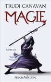
ISBN: 9783764530372
ListPrice: EUR 19,95
Maße: 1.97 x 8.66 x 5.83 in
Wertung: 4.0 (5 Stimmen)
Hinzugefügt am: 04.06.2009
Zusammenfassung: In ihrem neusten Werk "Magie" erzählt Trudi Canavan die Vorgeschichte zu ihrer erfolgreichen Trilogie "Die Gilde der Schwarzen Magier". Leider wich meine Vorfreude schnell ungläubigem Kopfschütteln und gähnender Langeweile.
Tessia wächst in Mandryn, nahe der Grenze zu Sachaka, bei ihren Eltern auf. Sie träumt davon, Heilerin zu werden, wie ihr Vater. Dies ist in jener Zeit in Kyralia für Frauen so gut wie unmöglich. Ihr Leben ändert sich drastisch als ihre magischen Fähigkeiten erkannt werden und Magier aus Sachaka gewaltsam in Kyralia eindringen. Außerdem ist da noch Jayan, der andere Novize ihres Meisters Lord Dakon...
Trotz der guten Grundidee und einiger origineller Ansätze macht sich nach dem spannenden Anfang schnell Langeweile breit, nicht nur weil das Ende so vorhersehbar ist. Interessante Ideen werden nur angerissen aber nicht weiterentwickelt, viele Figuren bleiben blass und die Schwarz-Weiß-Malerei ging mir schnell auf die Nerven. Die Parallelen zu Sonea, der Hauptfigur aus der "Gilde der Schwarzen Magier" und Auraya aus Canavans anderer Trilogie sind unübersehbar. An manchen Stellen störten auch die allzu aufdringlichen politischen Botschaften der Autorin.
"Magie" ist rund 200 Seiten länger als die Bücher um Sonea und für meinen Geschmack auch rund 200 Seiten zu lang. (Achtung Spoiler!) Die Magier ziehen von einem zerstörten Dorf ins andere und die magischen Schlachten sind zäh wie fader Kaugummi. Als Lehrling darf Tessia weder an den Gesprächen der Magier teilnehmen, noch an den Schlachten und so bleiben auch die Leser weitgehend außen vor.
Dann ist da die Geschichte um Stara, eine junge Frau, die bei ihrer Mutter in Elyne aufwuchs und von ihrem Vater in seinen Haushalt nach Sachaka gelockt wird. Dieser Teil ist für die Haupthandlung völlig unnötig und geht ein wenig unter. Ein separates Buch mit Stara als Hauptfigur wäre ideal und sicherlich spannender gewesen.
Fazit: Trudi Canavan versucht zuviel und das Ergebnis ist weitgehend oberflächlich und langweilig. Die magische Funke der "Schwarzen Magier" fehlt, darüber kann auch die ansprechende Gestaltung der deutschen Ausgabe nicht hinwegtrösten.
Themen
Hardcover, Softcover / Belletristik/Fantasy, Belletristik, Fantasy, Science Fiction, Science Fiction/Fantasy, Australische Belletristik
|
| 42 |
Trudi Canavan |
Die Gilde der Schwarzen Magier |
1 - Die Rebellin |
Broschiert |
543 |
Sept. 2007 |
cbt |
Fantasy |

1 - Die Rebellin Trudi Canavan
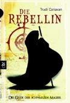
ISBN: 9783570303283
ListPrice: EUR 9,95
Ausgabe: 6th
Illustrator: Steve Stone
Maße: 1.81 x 7.17 x 4.96 in
Übersetzer: Michaela Link
Serie: Die Gilde der Schwarzen Magier
Wertung: 4.5 (385 Stimmen)
Hinzugefügt am: 09.11.2008
Zusammenfassung: Sonea ist eine junge Bettlerin im Armenviertel der Stadt Imardin. Hier herrscht die Gilde der Schwarzen Magier mit eiserner Hand. Einmal im Jahr führen die Magier eine “Säuberung” durch, in deren Verlauf alle Bettler, Obdachlosen und unerwünschten Elemente aus der Stadt geschafft werden. Sonea schließt sich einer Gruppe von Freunden an, die gegen diese grausame Praxis aufbegehren. Als Sonea voller Wut einen Stein nach einigen Magiern wirft, geschieht das Unfassbare: Ihr Stein durchschlägt den magischen Schutzschild der Männer und trifft einen von ihnen am Kopf.
Das kann jedoch nur eines bedeuten -- Sonea verfügt über eine unentdeckte magische Begabung. In der Gesellschaft Imardins ist die Magie nur den oberen Schichten vorbehalten; dass ein Straßenmädchen derartige Fähigkeiten besitzt, ist ein nie dagewesenes Ereignis, das die ehrwürdige Gilde der Magier in ihren Grundfesten erschüttert. Aus Furcht davor, getötet zu werden, flieht Sonea mit ihrem Freund Cery in die unterirdischen Tunnel, die von der Vereinigung der Diebe beherrscht werden. Zugleich machen sich die Magier Dannyl und Rothen auf die Suche nach dem Mädchen. Ohne eine entsprechende Ausbildung läuft Sonea Gefahr, aus Versehen die gewaltige Zerstörungskraft ihrer magischen Gabe zu entfesseln.
"Die Rebellin" ist der Auftakt einer groß angelegten Fantasytrilogie. Auch wenn die Geschichte selbst sich an genretypischen Konventionen orientiert, gelingt es Canavan, ihre Leser mit lebensecht wirkenden Figuren, tollen Kulissen und spannenden Handlungsbögen zu fesseln. Besonders faszinierend sind die komplex angelegten Hintergründe der Gesellschaft Imardins und der Gilde der Schwarzen Magier. Die Erzählung wird langsam aufgebaut, auf hektische Action-Szenen und Effekthascherei kann die Autorin verzichten. Dennoch fällt es bereits nach wenigen Seiten schwer, den Roman wieder aus der Hand zu legen. "--Steffi Pritzens"
Themen
TB/Kinder- und Jugendbücher/Jugendbücher ab 12 Jahre, Jugendromane u. -erzählungen, Kinder-, Deutscher Phantastik-Preis, Ab 12 Jahre, Australische Belletristik, Fantasy, Jugendliteratur, Kinder- u. Jugendliteratur, Kinderliteratur, Jugendliteratur
|
| 43 |
Trudi Canavan |
Die Gilde der Schwarzen Magier |
2 - Die Novizin |
Broschiert |
604 |
Nov. 2006 |
cbt |
Fantasy |
2 - Die Novizin Trudi Canavan
ISBN: 9783570303290
ListPrice: EUR 9,95
Ausgabe: 6th
Illustrator: Steve Stone
Maße: 1.89 x 7.09 x 4.96 in
Übersetzer: Michaela Link
Serie: Die Gilde der Schwarzen Magier
Wertung: 4.5 (99 Stimmen)
Hinzugefügt am: 09.11.2008
Zusammenfassung: Ich habe die 3 Bände von "Der Gilde der schwarzen Magier" allesamt verschlungen. Da wollte ich auch die Hörbücher in meiner Sammlung haben. Beim Hörbuch zum ersten Band Die Rebellin fand ich die Kürzungen auch recht gelungen und ich habe kaum wichtige Handlungen vermisst. Jetzt beim 2. Band Die Novizin fehlt ja ein Teil der Geschichte völlig. All die Abenteuer und Schwierigkeiten, die Botschafter Daniel im Buch erleben darf, fehlen hier völlig. Dann fehlt dem Hörer doch auch viel Hintergrundwissen, um den 3. Band dann richtig verstehen zu können....
Auch viel von dem Leid das Sonea durch den Novizin Regin erleben muss wird gekürzt....
Man hätte das Buch lieber auf 8 oder 10 CDs zusammengekürzt und dafür ein paar Euro mehr verlangt. Dann hätte das tolle Buch nicht so viel an Inhalt und Spannung verloren! Hoffentlich wird der 3. Band besser umgesetzt!
Mein Fazit: lieber die Triologie lesen!
Themen
Jugendromane u. -erzählungen, Kinder-, TB/Kinder- und Jugendbücher/Jugendbücher ab 12 Jahre, Ab 12 Jahre, Australien, Fantasy, Jugendliteratur, Kinder- u. Jugendliteratur, Kinderliteratur, Jugendliteratur
|
| 44 |
Trudi Canavan |
Die Gilde der Schwarzen Magier |
3 - Die Meisterin |
Broschiert |
702 |
Nov. 2006 |
cbt |
Fantasy |
3 - Die Meisterin Trudi Canavan
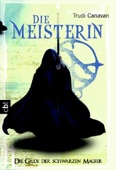
ISBN: 9783570303306
ListPrice: EUR 9,95
Ausgabe: 5th
Illustrator: Steve Stone
Maße: 2.20 x 7.09 x 5.04 in
Übersetzer: Michaela Link
Serie: Die Gilde der Schwarzen Magier
Wertung: 4.5 (385 Stimmen)
Hinzugefügt am: 09.11.2008
Zusammenfassung: Sonea ist eine junge Bettlerin im Armenviertel der Stadt Imardin. Hier herrscht die Gilde der Schwarzen Magier mit eiserner Hand. Einmal im Jahr führen die Magier eine “Säuberung” durch, in deren Verlauf alle Bettler, Obdachlosen und unerwünschten Elemente aus der Stadt geschafft werden. Sonea schließt sich einer Gruppe von Freunden an, die gegen diese grausame Praxis aufbegehren. Als Sonea voller Wut einen Stein nach einigen Magiern wirft, geschieht das Unfassbare: Ihr Stein durchschlägt den magischen Schutzschild der Männer und trifft einen von ihnen am Kopf.
Das kann jedoch nur eines bedeuten -- Sonea verfügt über eine unentdeckte magische Begabung. In der Gesellschaft Imardins ist die Magie nur den oberen Schichten vorbehalten; dass ein Straßenmädchen derartige Fähigkeiten besitzt, ist ein nie dagewesenes Ereignis, das die ehrwürdige Gilde der Magier in ihren Grundfesten erschüttert. Aus Furcht davor, getötet zu werden, flieht Sonea mit ihrem Freund Cery in die unterirdischen Tunnel, die von der Vereinigung der Diebe beherrscht werden. Zugleich machen sich die Magier Dannyl und Rothen auf die Suche nach dem Mädchen. Ohne eine entsprechende Ausbildung läuft Sonea Gefahr, aus Versehen die gewaltige Zerstörungskraft ihrer magischen Gabe zu entfesseln.
"Die Rebellin" ist der Auftakt einer groß angelegten Fantasytrilogie. Auch wenn die Geschichte selbst sich an genretypischen Konventionen orientiert, gelingt es Canavan, ihre Leser mit lebensecht wirkenden Figuren, tollen Kulissen und spannenden Handlungsbögen zu fesseln. Besonders faszinierend sind die komplex angelegten Hintergründe der Gesellschaft Imardins und der Gilde der Schwarzen Magier. Die Erzählung wird langsam aufgebaut, auf hektische Action-Szenen und Effekthascherei kann die Autorin verzichten. Dennoch fällt es bereits nach wenigen Seiten schwer, den Roman wieder aus der Hand zu legen. "--Steffi Pritzens"
Themen
Jugendromane u. -erzählungen, Kinder-, TB/Kinder- und Jugendbücher/Jugendbücher ab 12 Jahre, Ab 12 Jahre, Australische Belletristik, Fantasy, Jugendliteratur, Kinder- u. Jugendliteratur, Kinderliteratur, Jugendliteratur
|
| 45 |
Trudi Canavan |
Die Magie der tausend Welten |
1 - Die Begabte |
Gebundene Ausgabe |
672 |
Nov. 2014 |
Penhaligon Verlag |
Fantasy |
1 - Die Begabte Trudi Canavan
ISBN: 9783764531058
ListPrice: EUR 19,99
Maße: 22.6 x 14.8 x 4.8 cm
Serie: Die Magie der tausend Welten
Hinzugefügt am: 15.01.2015
Zusammenfassung:
Themen
|
| 46 |
Trudi Canavan |
Die Magie der tausend Welten |
2 - Der Wanderer |
Gebundene Ausgabe |
704 |
Nov. 2015 |
Penhaligon Verlag |
Fantasy |
2 - Der Wanderer Trudi Canavan
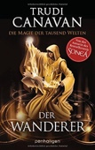
ISBN: 9783764531065
ListPrice: EUR 19,99
Maße: 22.3 x 15.0 x 5.2 cm
Serie: Die Magie der tausend Welten
Hinzugefügt am: 26.11.2015
Zusammenfassung:
Themen
|
| 47 |
Trudi Canavan |
Die Magie der tausend Welten |
3 - Die Mächtige |
Kindle Edition |
705 |
Juni 2017 |
Penhaligon Verlag |
Fantasy |
3 - Die Mächtige Trudi Canavan
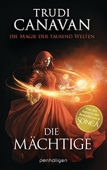
ISBN: 9783641205577
Übersetzer: Michaela Link
Serie: Die Magie der tausend Welten
Hinzugefügt am: 08.09.2017
Zusammenfassung: Ein Jahrtausend lang lenkte Valhan, der mächtigste aller Magier, die Geschicke der tausend Welten. Doch nun ist er tot, und Chaos greift um sich. Seine natürliche Nachfolgerin ist die junge Magierin Rielle, aber sie sträubt sich, diese Verantwortung zu übernehmen. Ohne ihre Wünsche zu beachten, bekämpfen sich im Hintergrund bereits ihre Unterstützer und ihre Gegner. Und niemand weiß, dass Valhans Pläne über seinen Tod hinaus gehen. Er will wiedergeboren werden, um ein weiteres Jahrtausend die Welten zu beherrschen – und dafür werden er und seine Anhänger jedes Hindernis beseitigen.
Themen
|
| 48 |
Trudi Canavan |
Die Magie der tausend Welten |
4 - Die Schöpferin |
Hardcover |
|
|
Penhaligon Verlag |
Fantasy |
4 - Die Schöpferin Trudi Canavan
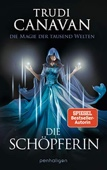
ISBN: 9783764532017
ListPrice: £22.77
Serie: Die Magie der tausend Welten
Hinzugefügt am: 05.11.2020
Zusammenfassung:
Themen
|
| 49 |
Trudi Canavan |
Sonea |
1 - Die Heilerin |
Gebundene Ausgabe |
576 |
Mai 2011 |
Penhaligon Verlag |
Fantasy |
1 - Die Heilerin Trudi Canavan
ISBN: 9783764530426
ListPrice: EUR 19,99
Maße: 1.81 x 8.58 x 5.75 in
Serie: Sonea
Hinzugefügt am: 02.06.2011
Zusammenfassung:
Themen
|
| 50 |
Trudi Canavan |
Sonea |
2 - Die Hüterin |
Gebundene Ausgabe |
576 |
Mai 2010 |
Penhaligon Verlag |
Fantasy |
2 - Die Hüterin Trudi Canavan
ISBN: 9783764530419
ListPrice: EUR 19,95
Maße: 1.81 x 8.66 x 5.75 in
Serie: Sonea
Wertung: 4.0 (56 Stimmen)
Hinzugefügt am: 23.10.2010
Zusammenfassung: Für mich wirkt das Buch wie eine gezwungene Fortsetzung .
T.Canavan gibt einem das Gefühl, dass sie zu den Charakteren keinen wirklichen Bezug hat, und ihre Hintergründe völlig vergessen hat.
Ich zähle die Punkte auf, die, meiner Meinung nach, absolut inakzeptabel sind:
- Dorrien: Am Ende des Buches "Die Meisterin" soll Rothens Sohn Dorrien Sonea in Heilkunst unterrichen. In diesem Buch jedoch, wird er nicht einmal wirklich erwähnt.
- Akkarin: Seine Vorgeschichte wird komplett umgekrempelt und keiner in der Gilde hat wirklich was nennenswertes dazu zu sagen. Sie gibt nicht einmal Hinweise für eine mögliche Aufklärung in den nächsten Büchern.
- Charaktere: Die Charaktere werden kaum beschrieben. Wie sieht Sonea nun aus? Ist sie dünn, ist sie dick? Hat sie Falten? Hat die lange Haare, oder hat sie wieder kurze? Wie sieht überhaupt Lorkin aus? Wie sieht Regin nun aus? Wieso hat sie das so lieblos "dahingeklatscht"?
- Kyralia: Wieso ist das konservative Kyralia auf einmal zu "Sodom und Gomorrha" geworden? Keiner sprach ansatzweise offen über Sex und nun hört man sogar, wenn man sich den Geräuschen der Stadt hingibt, ein Stöhnen. Magierfrauen werden wie Elynerinnen beschrieben. In Sachaka geht es um fast nichts anderes mehr. Sex sells? Ich meine, nicht, dass ich etwas dagegen hätte, aber sie sollte ihrer eigenen Gesichte schon treu bleiben.
Von mir bekommt das Buch leider nur 3 Sterne. Den Ersten gibt es für die Protagonistin, die so bleiben durfte, wie sie war. Und die anderen beiden Sterne dafür, dass das Buch dennoch eine Spannung hergibt.
Themen
|
| 51 |
Trudi Canavan |
Sonea |
3 - Die Königin |
Hardcover |
602 |
Nov. 2012 |
Penhaligon Verlag |
Arts & Photography |
3 - Die Königin Trudi Canavan

ISBN: 9783764530433
Maße: 1.97 x 8.66 x 5.75 in
Serie: Sonea
Hinzugefügt am: 15.11.2012
Zusammenfassung:
Themen
|
| 52 |
Adelbert Von Chamisso |
|
Peter Schlemihls wundersame Geschichte |
Taschenbuch |
96 |
Dez. 1986 |
Reclam, Ditzingen |
Romane & Erzählungen |
Peter Schlemihls wundersame Geschichte Adelbert Von Chamisso
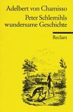
ISBN: 9783150000939
ListPrice: EUR 2,00
Maße: 0.39 x 5.91 x 3.86 in
Wertung: 4.5 (13 Stimmen)
Hinzugefügt am: 03.12.2008
Zusammenfassung: Die Geschehnisse des Werkes kann man mit einem Satz zusammenfassen: Peter Schlemihl verkauft seinen Schatten an dem Teufel, und büßt dafür. Wenn man anfängt, nachzudenken, was der Schattenverlust auf der Sprache der Symbolik heißen könnte, kommt man nicht weiter, ohne die Frage nach dem Wesen des Schattens zu stellen. In der animistischen Vorstellung galt jede Form der Reproduktion bzw. Duplikation des Menschen - so unter anderem der Schatten - als Manifestation der menschlichen Seele. So wurde dieses zweite Ich genauso gehütet, wie der Körper selbst, denn was immer dem Schatten zustieß, traf auch seinen Besitzer. Demnach war der Schatten ein wesentlicher Teil der individuellen Persönlichkeit, ohne den es kein vollwertiges, erfülltes Leben geben konnte. Der Schatten steht meines Erachtens - genauso wie bei C.G. Jung - für die unbewußte, nicht gelebte, nicht "beleuchtete" Seite der Persönlichkeit. Der Held gibt also einen Teil seiner Persönlichkeit ab, und wird dafür bestraft. So ist die Symbolik dieser Geschichte aktuell bis heute, denn sie rät dem Leser, ein ganzes Leben zu leben und nichts zu unterdrücken, keinen Pakt mit dem (symbolischen) Teufel zu schließen, um zum Reichtum zu kommen. Empfehlenswert zu lesen aber auch als Geschenk. (Dies ist eine Amazon.de an der Uni-Studentenrezension.)
Themen
Modern fiction, Deutsche Belletristik, Kunstmärchen, Roman, Erzählung, Belletristik, Legenden, Märchen, Sagen, TB/Belletristik/Hauptwerk vor 1945
|
| 53 |
Suzanne Collins |
Die Tribute von Panem |
1 - Tödliche Spiele |
Hardcover |
|
|
Oetinger Friedrich GmbH |
Education & Reference |
1 - Tödliche Spiele Suzanne Collins
ISBN: 9783789132186
Maße: 1.97 x 8.66 x 6.30 in
Serie: Die Tribute von Panem
Hinzugefügt am: 09.06.2012
Zusammenfassung:
Themen
|
| 54 |
Suzanne Collins |
Die Tribute von Panem |
2 - Gefährliche Liebe |
Hardcover |
|
Mai 2010 |
Oetinger Friedrich GmbH |
Education & Reference |

2 - Gefährliche Liebe Suzanne Collins
ISBN: 9783789132193
Illustrator: Hanna Hörl
Maße: 1.73 x 8.43 x 6.22 in
Serie: Die Tribute von Panem
Hinzugefügt am: 09.06.2012
Zusammenfassung:
Themen
|
| 55 |
Suzanne Collins |
Die Tribute von Panem |
3 - Flammender Zorn |
Hardcover |
|
|
Oetinger Friedrich GmbH |
Education & Reference |
3 - Flammender Zorn Suzanne Collins
ISBN: 9783789132209
Maße: 1.73 x 8.43 x 6.38 in
Serie: Die Tribute von Panem
Hinzugefügt am: 26.06.2012
Zusammenfassung:
Themen
|
| 56 |
Dawn Cook |
Die Bücher der Wahrheiten |
1 - Die erste Wahrheit |
Klebebindung |
480 |
Mai 2008 |
Blanvalet Taschenbuch Verlag |
Fantasy |
1 - Die erste Wahrheit Dawn Cook
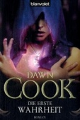
ISBN: 9783442265763
ListPrice: EUR 8,95
Maße: 1.57 x 7.17 x 4.96 in
Serie: Die Bücher der Wahrheiten
Wertung: 4.0 (21 Stimmen)
Hinzugefügt am: 04.03.2009
Zusammenfassung: "Endlich wieder eine schöne Fantasyreihe", das dachte ich mir, als ich dieses Buch entdeckte. Tatsächlich ist dieses Buch genau nach meinem Geschmack und ich freue mich schon riesig auf die 3 Folgebände.
Dieser erste Band kommt dabei mit nur sehr wenigen Hauptfiguren aus. Mir persönlich gefällt das sehr gut, denn so werden die Figuren detailiert beschrieben und man kann sich wirklich in sie hineinversetzen. Häufig mag ich nämlich an Fantasyreihen nicht, wenn es zu viele, blasse Figuren gibt, die lediglich das Namenmerken schulen und die Geschichte an sich nicht voranbringen. Hier ist es aber absolut nicht der Fall.
Die meiste Zeit handelt das Buch von Alissa, Strell und Kralle. Alissa wird von ihrer Mutter weggeschickt, eine Feste zu finden, die weit entfernt, noch hinter den Bergen, liegt. Es wird gemunkelt, dass es dort einst Magier und Drachen gab. Obwohl Alissa nicht möchte, wird sie von ihrer Mutter gezwungen zu gehen. Doch die Reise ist gefährlich, denn der Winter steht nah bevor und Alissa muss es schaffen die Berge zu überqueren, bevor es beginnt zu schneien. Unterwegs wird sie des öfteren von merkwürdigen Erinnerungen und Gedanken erfasst. Sie weiß nun, dass sie auf der Feste ein bestimmtes Buch finden muss, das einst ihrem Vater gehörte. Auf ihrem Weg trifft sie Strell, einen Musiker, der viele Jahre gereist ist. Obwohl die Herkunft der beiden sehr unterschiedlich ist und sie einander extrem kritisch betrachten, setzen sie ihren Weg zusammen fort. Letztendlich haben sie nur noch sich. Und Kralle, Alissas Vogel, ist auch mit von der Partie und verschafft dem Leser so manche lustige, aber auch tiefgehende Szene.
Mir hat das Buch wirklich unglaublich gut gefallen, Es ist spannend und beinhaltet ganz neue Ideen. Die Form der ausgeübten Magie ist z.B. anders als sonst üblich und somit ist es sehr erfrischend darüber zu lesen. Auch die Figuren wirken echt und nicht wie übertriebene Ausgeburten an Kraft, Wissen und Magie, wie es ja sonst häufig der Fall ist. Meines Erachtens handelt es sich also um recht realistische Fantasy, wenn man das so ausdrücken kann. Die Autorin schafft es durchgängig den roten Faden aufrecht zu erhalten und somit ist ihr ein grandioses Buch gelungen. Gut, dass schon alle 4 Bände dieser Reihe erschienen sind, denn das Ende des Buches lässt noch einige Fragen offen - und den Leser gespannt auf die Fortsetzung zurück.
Themen
Taschenbuch / Belletristik/Fantasy, Belletristik, Fantasy, Science Fiction, Science Fiction/Fantasy, Amerikanische Belletristik
|
| 57 |
Dawn Cook |
Die Bücher der Wahrheiten |
2 - Die geheime Wahrheit |
Taschenbuch |
480 |
Juli 2008 |
Blanvalet Taschenbuch Verlag |
Fantasy |
2 - Die geheime Wahrheit Dawn Cook
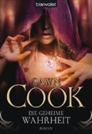
ISBN: 9783442265770
ListPrice: EUR 8,95
Maße: 1.50 x 7.24 x 4.88 in
Serie: Die Bücher der Wahrheiten
Wertung: 4.0 (21 Stimmen)
Hinzugefügt am: 23.10.2010
Zusammenfassung: *
Und bringt damit den ersten Band zu einem abgerundeten Ende.
Es folgen noch zwei Bände, welche beide zusammen wahrscheinlich auch eine inhaltliche Einheit bilden werden.
Noch immer sitzen Alissa und Strell in der magischen Burg fest.
Noch immer hält der abtrünnige Bewahrer Bailic rassistisch an seinem Irrglauben fest, daß der reinblütige Tiefländer Strell und nicht das Halbblut Alissa ein latenter Bewahrer ist ... und versucht dem jungen Mann ( natürlich vergeblich ) das nötige magische Wissen einzutrichtern, damit dieser ihm das mysteriöse Buch "Die erste Wahrheit" öffnen kann ... während der befreite letzte Meister der Feste Talo-Toecan ( alias "Nutzlos" ) dem Mädchen heimlich Magie beibringt.
Eben diesen Unterricht halte ich für den interessantesten Teil der Geschichte. Sowas hab ich noch nie zu lesen bekommen. Die Autorin beschreibt Magie zugleich als etwas Abstraktes, welches man sich jedoch bildlich vorstellen kann. Einerseits erinnert es ein klein wenig an das Magie-System aus "Die Gilde der Schwarzen Magier". Andererseits ist es auch was völlig Eigenständiges. Geschickt verstrickt Dawn Cook physikalische und chemische Gesetzmässigkeiten mit den eher abstrusen Gesetzen der Magie. Und - oh Wunder - es überzeugt auf ganzer Linie! So glaubhaft kam mir Zauberei noch nie vor, so LOGISCH erklärt. Gute Arbeit Frau Cook!
Es ist auch ein wenig lustig anzusehen, wie Alissa mit den ihr unverständlichen Begriffen umgeht, mit denen Talo-Toecan um sich schmeisst ( ungefähres Beispiel einer Unterweisung des Meisters: "Feuer entsteht dadurch, indem du ein luftdurchlässiges Feld um das Brennmaterial schaffst und innerhalb dieses Feldes seine Moleküle kraft der Ströme deiner magischen Pfade zum Bewegen bringst, sodaß sie gegeneinanderschlagen und Energie erzeugen, die sich schliesslich in Licht und Wärme - kurz FEUER - auslädt!" ... "Ich weiß zwar nicht was Moleküle sind, aber ich bring sie schon zum Brennen!" ^_^ )
Was dem Band fast einen Stern gekostet hätte, ist die Tatsache, daß Alissa in diesem Band zwischen zwei Stühlen ( sprich: Männern ) steckt. Dreiecksgeschichten, bei denen sich die Heldin ewig lange nicht entscheiden kann, wen sie nun eigentlich mehr liebt, während die beiden Rivalen wie versessen um ihre Gunst buhlen, kann ich irgendwie nicht ab! Sie fallen mir mit ihrem ständigen Hin und Her ganz gewaltig auf die Nerven! Glücklicherweise wird das hier nicht bis zum Geht-nicht-mehr ausgewalzt, tritt sogar eher in den Hintergrund, sodaß es mit der Zeit nicht wirklich wichtig wird. Ausserdem ist Strells Kontrahent - eine mysteriöse Persönlichkeit übrigens - ein sympathischer Bursche und beide Männer stellen Alissas Wohl vor ihrem eigenen. DAS kann sogar ich ohne Murren akzeptieren.
Etwas anstrengend fand ich allerdings, daß die Handlung auch hier - wie im ersten Band - so unendlich ausgewalzt wird. Das langsame Tempo der Story liess mich bangen, daß alle vier Bände so sein werden und man den gesamten Inhalt der vier Bücher eigentlich locker in zwei oder höchstens drei Bänden hätte unterbringen sollen. Und wieder drohte diese Tatsache den Band einen Stern zu kosten ... bis ich endlich zum letzten Drittel des Buches kam! Dieses widerrum entwickelt - im starken Kontrast zu den restlichen zwei Dritteln des Buches - ein rasantes Tempo und die Ereignisse überschlagen sich regelrecht.
Ausserdem tritt dort eine noch heftigerere Überraschung ans Licht als die im ersten Band. Diese hier trifft den Leser eher unvorbereitet, während man zuvor die wahre Identität der Meister langsam erahnen konnte.
Das hat der Story nun doch die volle Punktzahl meinerseits beschert. Knapp, aber immerhin!
Der erste Handlungsbogen kommt hier zu seinem Ende. Doch noch sind nicht alle Geheimnisse gelöst. Der Verbleib der anderen überlebten - scheinbar wilden - Rakus ( allen voran Talo-Toecans Geliebten Keribdis ) oder die angebliche Vergangenheit ( ein früheres Leben vielleicht? ) von Alissa ... um mal zwei davon zu nennen!
FAZIT:
Die Handlung entwickelt sich zunächst langsam, gewinnt dann an Fahrt, um schliesslich in einem tollen Finale ( des ersten Erzählbogens ) zu gipfeln!
Wem solche Zauberinnen-Geschichten wie "Die Gilde der Schwarzen Magier" oder "Die Pellinor-Saga" gefallen, der dürfte auch diese Fantasy-Reihe mögen. Erst recht wenn man dazu auf Drachen und Gestaltwandler steht! ^_~
Auch empfehlenswert bei Interesse an Jungmagierinnen:
Die Rebellin ( Die Gilde der Schwarzen Magier )
Die Gabe ( Die Pellinor-Saga )
oder epischer Tochter des Windes ( Die Rhapsody-Saga )
Und ein besonderes Schmankerl:
Wem "Die Bücher der Wahrheiten" gefallen haben, demjenigen empfehle ich folgende Tetralogie von C.L. Wilson:
Tairen Soul - Saga
Band 1: Im Bann des Elfenkönigs
Oder die englische Originalfassung ( von der auch mehrere Bände erschienen sind ).
Book 1: Lord of the Fading Lands
Themen
|
| 58 |
Dawn Cook |
Die Bücher der Wahrheiten |
3 - Die letzte Wahrheit |
Taschenbuch |
480 |
Nov. 2008 |
Blanvalet Taschenbuch Verlag |
Fantasy |
3 - Die letzte Wahrheit Dawn Cook
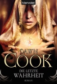
ISBN: 9783442265794
ListPrice: EUR 8,95
Maße: 1.42 x 7.32 x 4.88 in
Serie: Die Bücher der Wahrheiten
Wertung: 4.5 (19 Stimmen)
Hinzugefügt am: 23.10.2010
Zusammenfassung: Alissa ist zweifach frustriert. Erstens darf sie seit ihrer letzten Eskapade die Feste nicht mehr verlassen und zweitens kann sie sich nicht zwischen Strell und Lodesh entscheiden. Kein Wunder, dass sie in ihre Träume entflieht. Dort geschieht das Unmögliche. Alissa trifft auf eine zweite Träumerin, eine junge Meisterin, die in der verschollen geglaubten Drachenkolonie lebt. Begleitet von ihren zwei Verehrern, Connen Neute und ihrem Falken Kralle macht sich Alissa auf den Weg die Kolonie zu finden und zur Feste zurückzubringen. Nach einer gefährlichen Reise um die halbe Welt müssen die Gefährten erkennen, dass nicht alle Meister nach Hause zurückkehren wollen und ihre Redelsführerin ist Keribdis, die Frau von Nutzlos.
Feindschaften flammen auf, hässliche Wahrheiten werden ans Tageslicht gezerrt und schmerzvolle Entscheidungen getroffen.
Dawn Cook schreibt keine rasanten Actionszenen, Schlachtgemälde oder verzwickte Handlungen. Aber sie ist eine fantastische Geschichtenerzählerin, die mit wenigen Akteuren Erstaunliches zustande bringt. Wie gut sie wirklich ist, beweißt sie in DIE LETZTE WAHRHEIT, dem abschließenden Band der Bücher der Wahrheiten. Hier werden viele Fragen beantwortet (warum die Rakus vor dem Aussterben stehen ), alte Handlungsfäden aufgenommen (verschollene Kolonie, Alissas Entscheidung) und manche Ereignisse in den vorangegangenen Bänden bekommen eine völlig neue Bedeutung (Keribdis, Redal Stan). Das Highlight des Romans waren wie immer die Charaktere, mit denen man so sich richtig schön mitfreuen oder mitleiden kann. Von Alissas Hochzeitsnacht war ich besonders entzückt - wer hätte sich gedacht, dass sich der Vollzug so schwierig und komisch gestalten kann?! ;->
Die Bücher der Wahrheiten: Die erste Wahrheit, Die geheime Wahrheit, Die verlorene Wahrheit, Die letzte Wahrheit
Themen
|
| 59 |
Dawn Cook |
Die Bücher der Wahrheiten |
4 - Die verlorene Wahrheit |
Taschenbuch |
480 |
Sept. 2008 |
Blanvalet Taschenbuch Verlag |
Fantasy |
4 - Die verlorene Wahrheit Dawn Cook
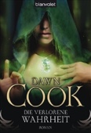
ISBN: 9783442265787
ListPrice: EUR 8,95
Maße: 1.50 x 7.17 x 4.96 in
Serie: Die Bücher der Wahrheiten
Wertung: 4.5 (15 Stimmen)
Hinzugefügt am: 23.10.2010
Zusammenfassung: *
Eines vorneweg: Die Inhaltsangabe, wie sie auf dem Rückcover des Buches steht, stimmt SO nicht.
Alissa ist NICHT dazu verdammt, nach einer misslungenen Beschwörung in ihrer Drachengestalt zu bleiben. Sie wird dazu verdammt, nach einer Zeitreise in der Vergangenheit festzusitzen - ausgelöst durch ihre unnötige Verwandlung während eines magischen Versuchs!
Nämlich vor 400 Jahren, als die Feste noch voll von Meistern und Bewahrern war.
Und genau diese Zeitreise macht den Band so interessant.
Denn endlich erfährt man etwas über Lodeshs Vergangenheit und lernt die verschiedenen damaligen Bewohner der Feste kennen.
Neue bedeutende Charaktere werden eingeführt, z.B. der strenge Altmeister Redal-Stan, der schüchterne Jungmeister Connen-Neute (!), sowie der voranstrebende Schüler Ren ... und noch viele andere!
Dadurch wirkt die Handlung diesmal etwas lebhafter als in den beiden vorherigen Bänden mit ihren wenigen Charakteren.
Ausserdem fügt sich im Verlauf der Story auch vieles zusammen, denn die Geschehnisse sind äusserst informativ. Man bekommt des Öfteren einen AHA-Effekt ab, nach dem Motto: "SO ist das also passiert!" und "DESWEGEN hat derjenige später dies und das gemacht!"
Damit werden zwar viele Fragen beantwortet, aber es bilden sich ebenso neue Geheimnisse, z.B. was es mit der Hirdun-Familie - und damit auch Strell - denn genau auf sich hat! ( durch aufmerksames Lesen dieses Bandes, sowie der zwei davor - erhält man schon eine gewisse Vorahnung! )
Der Leser bekommt ebenfalls einen ersten Blick in die zweifelhaften Pläne der Meister geboten, die der Schlüssel zu späteren Schicksalen sind.
Besonders kurios: Hier wird doch tatsächlich die Vererbungslehre ( mit dominanten / rezessiven Merkmalen & Co ) angesprochen ... welche offensichtlich extrem von Bedeutung für die verschiedenen Rassen der gesamten Bevölkerung des Reiches ist ( v.a. was die "Berufsstände" der Shaduf und Septhama angeht ).
Ziemlich untypisch für einen Fantasy-Roman eigentlich, aber dennoch nicht unpassend zur Magie dieser Welt, welche z.T. physikalische und chemische Gesetzmässigkeiten verwendet.
Eine interessante Idee ist es auch, den Hauptcharakter gewissermaßen als schizophren mit einem "Alter Ego" darzustellen! Die Heldin hat dadurch praktisch immer ein Damokles-Schwert über sich hängen und eine endgültige Lösung dieses Problems steht noch aus.
Nun. Ich bin schon ziemlich gespannt auf den vierten ( und letzten ) Band. Da müsste endlich das Geheimnis um die "Seuche des Wahnsinns" gelüftet werden.
FAZIT:
Damit ist es amtlich! ^^ Mit dem vorliegenden Band haben sich "Die Bücher der Wahrheiten" nun endgültig ihren Platz direkt neben der "Gilde der Schwarzen Magier" auf meiner Lieblingsliste ergattert. Stehen also ziemlich weit oben.
Wer also die Schwarzmagier-Trilogie von Trudi Canavan mochte, dem dürfte auch diese Buchreihe von Dawn Cook zusagen!
PS:
Bei beiden Romanreihen ist der Einstiegsband möglicherweise etwas zäh, aber das Weiterlesen lohnt sich definitiv. Ich hab`s getan und es gewiss nicht bereut.
Ebenso empfehlenswert, falls Interesse an Jungmagierinnen besteht:
Die Rebellin ( Die Gilde der Schwarzen Magier )
Die Gabe ( Die Pellinor-Saga )
oder noch epischer Tochter des Windes ( Die Rhapsody Saga )
Und ein besonderes Schmankerl:
Wem "Die Bücher der Wahrheiten" gefallen haben, demjenigen empfehle ich folgende Tetralogie von C.L. Wilson:
Tairen Soul - Saga
Band 1: Im Bann des Elfenkönigs
Oder die englische Originalfassung ( von der auch mehrere Bände erschienen sind ).
Book 1: Lord of the Fading Lands
Themen
|
| 60 |
Alison Croggon |
Die Pellinor-Saga |
1 - Die Gabe |
Broschiert |
496 |
Dez. 2007 |
Bastei-Lübbe |
Überblick |
1 - Die Gabe Alison Croggon
ISBN: 9783404285143
ListPrice: EUR 13,00
Ausgabe: 2
Maße: 1.50 x 8.27 x 5.28 in
Serie: Die Pellinor-Saga
Wertung: 4.0 (29 Stimmen)
Hinzugefügt am: 27.02.2010
Zusammenfassung: Die Pellinor-Saga greift auf bewährte Muster zurück: Eine junge Frau namens Maerad wächst in einer schäbigen Burg auf, ohne sich ihrer Herkunft bewusst zu sein. Das sie mehr als nur eine Sklavin ist wird ihr von dem Barden Cadvan offenbart, der sich auf der Flucht vor dem Bösen (huch) befindet. Er nimmt sie natürlich mit und führt sie in die Welt des Bardentums ein. Alison Croggon verschmilzt die fantasytypischen Magier, Druiden, Künstler und Barden in ihrem Roman zum "Dhillareare", übersetzt Sternensänger. Diese sind in der Welt Edil-Amarandh all das in Personalunion. Magiebegabte Monster, wie Untote oder Grabunholde, sind dementsprechend "Schwarze Barden".
Die Bardenschulen scheinen nicht nur kulturelle Zentren zu sein, sie nehmen auch Abgaben von den umgebenden Ländereien und lehren dafür das Volk im Gegenzug lesen, rechnen oder in anderen Künsten, ebenso sorgen sie für fruchtbare Felder und gute Ernte. Über sonstige Machtinstanzen erfährt man nichts, außer über das dunkle Land eines gefallenen Barden, des "Namenlosen", Dén Raven. Sein Einfluss droht das Land zu verderben, immer mehr Barden wenden sich dem Bösen zu, ganze Bardenschulen scheinen bereits unterwandert.
Maerad entpuppt sich als außerordentlich fähige Bardin, die auch ohne Ausbildung untote Barden in Flammen aufgehen lassen kann. Mit handfester Anwendung von Magie wird nicht gegeizt, aber auch Naturmagie und -schönheit wird viel Raum eingeräumt. So reisen Maerad und Cadvan durch dunkle Täler oder wunderschöne lichtdurchflutete Wälder, der Zustand des Ortes alleine reicht aus, um anzuzeigen was die beiden hier jeweils erwartet. Der Dichtkunst und Musik des Bardentums wird auch eifrig Rechnung getragen, aber auch kulinarischen Genüssen. An köstlichen Weinen und Leckereien herrscht kein Mangel, unter schlechter Ernährung leidet man nur auf der Flucht vor den Untoten. Tiere wie ein edler Berglöwe oder ebenso edle Pferde, mit denen Barden sich natürlich in der Tiersprache unterhalten können, oder Raben die als Boten fungieren, sind ebenfalls vorhanden.
Recht altbacken sind die Charakterisierung der Figuren und die Erzählweise. Es wird exzessive Schwarz-Weiß-Malerei betrieben, der Fokus des Erzählers ist ausschließlich an Maerad gebunden. Hätte mir der Erzähler nicht von Maerads hitzigen Temperament berichtet, ich hätte es gar nicht bemerkt. Denn alle Charaktere sind lieb und nett oder abgrundtief verdorben und böse, hier gibt es keine Grautöne, Ecken und Kanten an sonst liebenswerten Charakteren oder ähnliches. Das ist alles sehr voraussehbar, eine Liebesbeziehung zwischen Cadvan und Maerad fehlt noch, wird aber vermutlich in Band 2 nachgeliefert.
"Die Gabe" liest sich widerstandsfrei und gefällig, was gewöhnlich gute Rezensionen nach sich zieht. Besondere Komplexität des Weltenbaus, Innovation oder starke Charaktere vermisse ich jedoch. Alison Croggons Sprache kann auch in der gelungenen Übersetzung durch Michael Krug verzaubern, doch dieser Zauber währt nicht lange. Ich konnte keine wirkliche Beziehung zur Heldin, anderen Charakteren oder der Handlung herstellen, das ist mir einfach zu viel Wohlfühl-Fantasy ohne wirklich eigenen Charakter.
Themen
Belletristik / Fantasy, Belletristik / Science Fiction / Fantasy, Fantasy
|
| 61 |
Alison Croggon |
Die Pellinor-Saga |
2 - Das Rätsel |
Taschenbuch |
494 |
März 2008 |
Bastei-Lübbe |
Überblick |
2 - Das Rätsel Alison Croggon
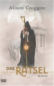
ISBN: 9783404285150
ListPrice: EUR 13,00
Ausgabe: 1
Maße: 1.34 x 8.43 x 5.35 in
Serie: Die Pellinor-Saga
Wertung: 4.0 (12 Stimmen)
Hinzugefügt am: 27.02.2010
Zusammenfassung: *
Denn man rätselt so über manches was im zweiten Band geschieht. Über die Identität des "Baumlieds" wie auch über die wahren Absichten der Charaktere und allgemein darüber, wohin die Story letztendlich führen soll.
Im ersten Band war die Handlung noch teilweise vorhersehbar. Im zweiten Band ist das überhaupt nicht mehr der Fall. Doch genau diese Originalität macht ihn so lesenswert, finde ich.
Ebenso wie in "Die Gabe" ist der Inhalt auch hier extrem komplex. Nix fürs schnelle "Zwischendurch-Lesen" während der Bus-und Bahnfahrten!
In "Das Rätsel" wird nachvollziehbar aufgezeigt, daß Maerad keine strahlende Heldin ist und daß sie sehr schwerwiegende Fehler machen kann.
Zudem wird verdeutlicht, daß die "Finsternis" sich nicht so einfach vom "Licht" abgrenzen lässt.
Und sonst was Neues?
Maerad lernt eine ( sehr nützliche ) spezielle magische Fähigkeit kennen ( z.T. mit witzigen Ergebnissen ). Es gibt wieder neuartige zauberische Gegenstände und weitere ( schaurige ) Kreaturen.
Ausserdem kommen zwei berühmte Elementare ( bzw. Elidhu ) in der Story vor. Die bereits bekannte Königin Ardina gibt sich nunmehr etwas häufiger die Ehre und der Winterkönig / Eishexer Arkan erscheint endlich auf der Matte. Und wie! *hehe*
Ach ja. Zum vielschichtigen Inhalt kommen noch so einige heftige Überraschungen dazu, z.B. Maerads komplizierte Liebes-Gefühle ( haben mich praktisch wie ein Hammerschlag erwischt ).
Den geneigten Leser erwarten wieder mal schön detaillierte Beschreibungen - besonders von der Landschaft. Und abwechslungsreicher als im ersten Band ist die Reise allemal! Diesmal geht es nämlich auf die mediterrane Insel Thorold ( die mich ganz stark an meinen Korsika-Urlaub erinnerte ^^ ) und dann wieder zurück aufs Festland hoch in den eisigkalten Norden.
Dabei wird gesegelt, geritten, mit dem Schlitten gefahren und zu Fuß gelatscht ... auch auf allen Vieren ( ??? Selberlesen! ^_~ )
Leider nimmt die Handlung ab ca. der Hälfte eine seltsame Wendung, die mir nicht so recht schmecken mag. Zwar gefällt mir die nun folgende Unvorhersehbarkeit der Story, doch mit ihr kommen auch ziemlich viele einschneidende, dramatische Ereignisse ... etwas zuviel Tragik für meinen Geschmack! Im ersten Band hielt sich das noch in Grenzen. Diesmal wird die Heldin regelrecht psychisch gefoltert von der Autorin! >_<
Deshalb bekommt der zweite Band von mir bloss vier Sterne.
FAZIT:
"Das Rätsel" ist eine ebenso komplexe, aber originellere Fortsetzung von "Die Gabe" mit etwas melodramatischer Handlung.
Macht richtig Lust auf Teil drei "Die Krähe", sowie den vierten und letzten Band "Das Baumlied"!
PS:
Interessantes Hintergrundwissen bekommt man auch hier in den Anhängen zu lesen. Neben einer Fortsetzung zu "Annar und die sieben Königreiche" gibt es einen Abriss über die menschlichen Völker ( Pilanel, Jussack, ... ) und die Elidhu ( v.a. Ardina und Arkan ) von Edil-Amarandh. Ferner wird hier dem Leser das kompizierte "Baumlied" mit seinen Runen nähergebracht.
Schade nur, daß auf der dazugehörigen Karte die bereisten Nordländer nicht mehr draufgezeichnet sind.
Auch empfehlenswert bei Interesse an Jungmagierinnen:
Die Rebellin ( Die Gilde der Schwarzen Magier )
Die erste Wahrheit ( Die Bücher der Wahrheiten )
oder epischer Tochter des Windes ( Die Rhapsody-Saga )
Themen
Belletristik / Fantasy, Belletristik, Belletristik / Science Fiction / Fantasy, Fantasy, Science Fiction
|
| 62 |
Alison Croggon |
Die Pellinor-Saga |
3 - Die Krähe |
Taschenbuch |
576 |
Juni 2008 |
Bastei-Lübbe |
Überblick |
3 - Die Krähe Alison Croggon
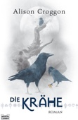
ISBN: 9783404285198
ListPrice: EUR 13,00
Ausgabe: 1
Maße: 1.73 x 8.43 x 5.28 in
Serie: Die Pellinor-Saga
Wertung: 4.5 (10 Stimmen)
Hinzugefügt am: 27.02.2010
Zusammenfassung: Nach "Die Gabe" und "Das Rätsel" widmet sich Alison Croggon in "Die Krähe" einer ganz anderen Figur. Hauptfigur dieses Buches ist Hem, der Bruder von Maerad, und mit ihm begibt man sich auf eine weitere Etappe in der "Pellinor-Saga". Mit "Die Krähe" erzählt nun Alison Croggon die Bücher IV und VI des Naraudh Lar-Chanë auf ihre Weise nach, um diese in Marokko gefunden Schriftstücke der Welt näher zu bringen.
Durch das gänzlich andere Wesen der „neuen“ Hauptfigur wirkt auch dieses Buch in sich etwas anders. Aber dennoch ist der Stil gleich, man sitzt der Figur Hem ständig im Genick und der Schreibstil von Alison Croggon lässt einen mit ihm fühlen. Allein dass nun Hem im Focus der Erzählung steht, war eine große Überraschung, und so lässt es den Leser vermuten, dass hinter ihm mehr steckt, als die Autorin bis jetzt hat durchblicken lassen. Und natürlich bewahrheitet sich dies auch und macht sich in vielerlei überraschenden Wendungen bemerkbar. Sehr schön ist ebenfalls, dass die Parallelität zwischen "Die Krähe" und "Das Rätsel" immer wieder durch kleine Nachrichten, die von Maerad im letzten Band verfasst wurden und die Hem in diesem dann erhält, hergestellt wird. Dadurch ergibt sich eine unsichtbare Verbindung zwischen den zwei Büchern. Um bei den vielen Reisen, die nun auch Hem quer durchs Land führen, die Übersicht nicht zu verlieren, ist auch hier wieder die Karte von Edil-Amaranon mit dabei und gleich in zweifacher Ausführung, eine hilfreiche auf zwei Buchseiten, die andere leider etwas unpraktisch auf den Innenseiten der Buchdeckel angebracht, dies hätte man sich sparen können. Und natürlich fehlt auch der Anhang nicht, der neue Erläuterungen zu dem in diesem Buch behandelten Themen gibt, und auch die Anmerkungen mit vielen Buchtiteln zum Nachschlagen sind wieder mit dabei.
Damit schafft Alison Croggon ein sehr fesselndes Buch, was mit überraschenden Momenten nur so um sich wirft, allein die neue Hauptfigur war eine überraschende Wendung. Trotzdem bleibt sie sich treu, auch wenn hier eine neue sichtweise auf Edil-Amaranon mit hineinspielt. Es bleibt auf jeden Fall spannend bis zum Schluss und ist sehr einbeziehend, der Leser durchlebt alles hautnah mit Hem, seine Freude genauso wie sein Leid. Und natürlich stehen nun zwei Handlungsstränge unvollendet zur Verfügung, um im letzten Teil verwendet zu werden.
Deshalb dürfte es auch sehr interessant werden, wenn im nächsten Jahr "Das Baumlied", der Abschluss dieser Saga, herauskommt, schon allein deswegen, weil nun ja zwei Hauptfiguren das Buch führen und auch zusammengeführt werden müssen.
Themen
Belletristik / Fantasy, Belletristik, Belletristik / Science Fiction / Fantasy, Fantasy, Science Fiction
|
| 63 |
Alison Croggon |
Die Pellinor-Saga |
4 - Das Baumlied |
Taschenbuch |
525 |
März 2009 |
Bastei-Lübbe |
Überblick |
4 - Das Baumlied Alison Croggon
ISBN: 9783404285280
ListPrice: EUR 12,00
Ausgabe: 1
Maße: 1.65 x 8.43 x 5.28 in
Serie: Die Pellinor-Saga
Wertung: 4.5 (15 Stimmen)
Hinzugefügt am: 27.02.2010
Zusammenfassung: "Das Baumlied" selber unterscheidet sich in manchen Punkten von seinen Vorgängern. Während dort entweder Hem oder Maerad im Vordergrund standen, teilen sie sich nun dieses Buch, während sie sich von den verschiedenen Enden Edil-Amaranons entgegenkommen.
Da man mittlerweile nirgends in den sieben Königreichen mehr sicher ist, haben beide Stränge sehr viel zu bieten und jede Gruppe hat so ihre eigenen Hochs und Tiefs.
Auch die Story an sich hat Licht- und Schattenseiten, was aber an der literarischen Vorlage liegen mag; immerhin handelt es sich um so etwas wie ein Heldenepos. Zum Ende hin verläuft vieles einfach zu glatt oder ist einfach zu unglaubwürdig, als dass es auch nur ansatzweise hätte so passieren können, selbst in einem fantastischen Universum. Trotz dieses kleinen Makels hat das Buch viel zu bieten, zum Beispiel viele innere Monologe, in denen gerade die starken Charaktere mit ihren eigenen Dämonen zu kämpfen haben. Bei diesen Auseinandersetzungen mit sich selbst wird dem Leser vor allem auch verdeutlicht, welchen Preis sie für ihre Macht zahlen müssen. Außerdem wächst im Speziellen der Charakter Maerad weit über sich hinaus und hält so den Leser in Atem, welches Wunder sie als nächstes vollbringen mag. Das Ende an sich gestaltet sich eher unspektakulär, denn plötzlich ist alles vorbei - aber der dazugehörige Epilog ist dann wieder sehr schön geworden, denn er hat diesen Hoffnungsschimmer-Charakter, auch wenn schon klar ist, dass es an dieser Stelle keine Weiterführung der Geschichte gibt. Sicherlich ist auch "Das Baumlied" wie seine Vorgänger nichts für schwache Nerven, denn Tote, Krieg und Kämpfe säumen den Weg der Figuren.
Auf den ersten Seiten befindet sich eine übersichtliche Karte auf einer Doppelseite, die das ganze Edil-Amaranon-Gebiet abbildet; wieso diese Karte sich auch auf der Rückseite des Einbandes, also auf der allerersten Seite, und der allerletzten befindet, mag dabei schleierhaft bleiben. Aber gebraucht wird zumindest eine der Karten auf jeden Fall; obwohl die Figuren in ihrer Welt schon fast ein Jahr unterwegs sind, gibt es noch immer Orte, die sie nicht aufgesucht haben, und so kann man den Weg der einzelnen Gruppen sehr gut im Auge halten.
Ebenfalls wie seine Vorgänger befindet sich zu Anfang ein Inhaltsverzeichnis über das gesamte Buch, aus dem man erfährt, dass einen ein weiteres Vorwort der Autorin Alison Croggon sowie ein Anhang erwartet, in dem unter anderem Informationen zu den Hauptfiguren zu finden sind, die sie nach Anfrage ihrer Leser zur Verfügung stellt.
Sicherlich ein sehr schöner Abschluss dieser Reihe, die in sich sehr rund ist und dem Leser wahrlich eine sehr interessante Geschichte zu bieten hat, die einen durch seinen Facettenreichtum immer wieder zu fesseln weiß und trotz aller Niederlagen und Hindernisse doch zu einem guten Ende findet.
Themen
Belletristik / Fantasy, Belletristik / Science Fiction / Fantasy, Fantasy
|


 Updated: 27.12.2022 | Total number of titles: 201 | Page: 3 of 17
Updated: 27.12.2022 | Total number of titles: 201 | Page: 3 of 17